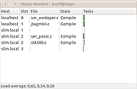

distcc
Dieser Artikel wurde für die folgenden Ubuntu-Versionen getestet:
Ubuntu 14.04 Trusty Tahr
Zum Verständnis dieses Artikels sind folgende Seiten hilfreich:
Distcc  ist ein Programm, das es ermöglicht, über das Netzwerk verteilt Programme zu kompilieren. Dies lohnt vor allem bei Quelltexten, die aus vielen einzelnen Dateien bestehen. Durch die Arbeitsteilung ist ein nicht zu verachtender Leistungsschub erzielbar. Man spricht in diesem Zusammenhang auch von einem Compile-Cluster.
ist ein Programm, das es ermöglicht, über das Netzwerk verteilt Programme zu kompilieren. Dies lohnt vor allem bei Quelltexten, die aus vielen einzelnen Dateien bestehen. Durch die Arbeitsteilung ist ein nicht zu verachtender Leistungsschub erzielbar. Man spricht in diesem Zusammenhang auch von einem Compile-Cluster.
Konkret realisiert wird dies, indem ein Daemon (ein Serverprozess) ausgeführt wird, der Quelltexte und Includes über das Netzwerk annimmt und mithilfe des GCC auf der jeweiligen Maschine kompiliert. Das Ergebnis wird anschließend zurückgesandt. Der normale distcc-Prozess reicht Quelltexte und Includes an die Daemons im Netzwerk weiter. Das Programm stellt also einen Netzwerk-Wrapper für den GCC zu Verfügung.
Installation¶
Installiert wird distcc mit dem Paket
distcc (universe)
 mit apturl
mit apturl
Paketliste zum Kopieren:
sudo apt-get install distcc
sudo aptitude install distcc
 Optional kann man einen Monitor installieren, der die Vorgänge auf den einzelnen Rechnern anzeigt.
distccmon-gnome (universe)
mit apturl
Paketliste zum Kopieren:
sudo apt-get install distccmon-gnome
sudo aptitude install distccmon-gnome
Service steuern¶
Der distcc Daemon lässt sich mit diesen Befehlen steuern:
# Allgemein
sudo service distcc {start|stop|restart|force-reload|status}
# Beispiel
sudo service distcc start
* Starting Distributed Compiler Daemon: distccd [ OK ]
sudo service distcc status
* distccd is running Konfiguration¶
distcc wird über die Datei /etc/default/distcc konfiguriert [3]. Darin befinden sich nur wenige Parameter.
Der Parameter STARTDISTCC beeinflusst, ob der Server beim Systemstart geladen werden soll. Der Wert false ist daher auf true zu ändern.
Der nächste Parameter, ALLOWEDNETS gibt an, welche Computer diesen Server nutzen dürfen. Die Angabe darf zum einen durch IP-Adressen geschehen, aber auch durch Adressbereiche in der Notation *.*.*.0/24, wobei die Sterne durch das jeweilige Subnetz zu ersetzen sind. Mehrere Einträge sind durch Leerzeichen zu trennen.
Der Parameter LISTENER gibt an, auf welchem Netzwerk-Interface der Server auf Anfragen warten soll. Hier muss die IP Adresse des jeweiligen Rechners eingetragen werden. Besitzt der Rechner mehrere Netzwerkkarten, muss die entsprechende IP Adresse verwendet werden.
Der Wert NICE bestimmt, wie hoch die Prozess Priorität des Compilers sein soll. Je höher der Wert, desto niedriger die CPU Last (siehe Shell/nice für Details)
JOBS gibt an, wie viele Aufträge der Rechner annimmt. Ein leerer Wert bedeutet, dass beliebig viele Jobs gestartet werden
Mit ZEROCONF ist es möglich, dass alle entsprechend konfigurierten Rechner im Netzwerk automatisch über Avahi gefunden und verwendet werden.
Beispieldatei
STARTDISTCC="true" ALLOWEDNETS="192.168.1.0/24" LISTENER="192.168.1.107" NICE="10" JOBS="" ZEROCONF="false"
Nutzung¶
Vorarbeit¶
Um mit distcc arbeiten zu können muss man erst einmal mitteilen, welche Rechner zum Kompilieren genutzt werden sollen. Dies kann man temporär über den export Befehl tun, statisch in einer speziellen hosts-Datei oder automatisch mit Hilfe von Zeroconf (Avahi).
Für die temporäre Variante verwendet man den Befehl export, um die Variable DISTCC_HOSTS zu setzen. Hier gibt man die IP-Adressen oder DNS-Namen der beteiligten Rechner, mit einem Leerzeichen getrennt, an.
export DISTCC_HOSTS="127.0.0.1 192.168.1.100 192.168.1.200"
Die angegebenen IP-Adressen dienen als Beispiel und müssen natürlich angepasst werden. Soll der lokale Rechner ebenfalls kompilieren gibt man 127.0.0.1 bzw localhost an. Hier ein Beispiel mit den DNS-Namen von Avahi:
export DISTCC_HOSTS="localhost rechner1.local rechner2.local"
Möchte man automatisch alle im Netzwerk eingerichteten Clients kompilieren lassen, gibt man einfach folgendes ein:
export DISTCC_HOSTS="+zeroconf"
Alternativ lassen sich die Hosts - ein Eintrag pro Zeile - entweder global in /etc/distcc/hosts oder für jeden Benutzer in ~/.distcc/hosts - ablegen. Als Standardeintrag in /etc/distcc/hosts ist +zeroconf eingetragen.
Nun kann mit Hilfe von make das jeweilige Projekt über das Netzwerk kompiliert werden:
make -j3 CC=distcc
Der Parameter -j definiert die Anzahl der parallelen Builds. Hier sollte man die Anzahl der beteiligten CPUs bzw. Prozessor-Kerne angeben. Die Umgebungsvariablen lassen sich auch automatisiert setzen, indem man sie in ~/.profile einträgt. Der Parameter CC=distcc gibt an, dass statt des klassischen Compilers cc nun distcc genutzt werden soll. Dies bewirkt die automatische Verteilung des Quelltextes an die Server.
 Übersichtsartikel
Übersichtsartikel- Erstellt mit Inyoka
-
 2004 – 2017 ubuntuusers.de • Einige Rechte vorbehalten
2004 – 2017 ubuntuusers.de • Einige Rechte vorbehalten
Lizenz • Kontakt • Datenschutz • Impressum • Serverstatus -
Serverhousing gespendet von